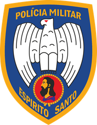
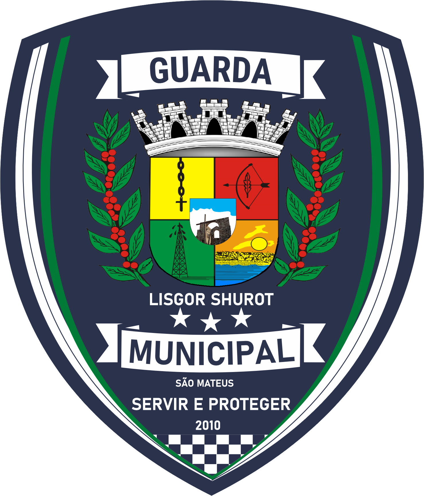

Exército Brasileiro
Referência institucional em defesa terrestre e presença nacional.
VISITAR SITE OFICIAL ↗
Instituições oficiais apresentadas como referências de disciplina, serviço, formação e compromisso com o Brasil.
O Projeto Jovem Militar é independente. Esta página apresenta instituições públicas e forças de segurança como referências institucionais, sem afirmar parceria, convênio ou vínculo com o PJM.
Referência institucional em defesa terrestre e presença nacional.
VISITAR SITE OFICIAL ↗
Referência institucional em defesa e atuação no ambiente marítimo.
VISITAR SITE OFICIAL ↗Referência institucional em defesa do espaço aéreo e integração nacional.
VISITAR SITE OFICIAL ↗
Instituição estadual de segurança pública do Espírito Santo.
VISITAR SITE OFICIAL ↗
Instituição estadual de polícia judiciária e investigação.
VISITAR SITE OFICIAL ↗
Instituição estadual vinculada à administração penitenciária.
VISITAR SITE OFICIAL ↗
Referência municipal de segurança e proteção no município de São Mateus/ES.
VISITAR SITE OFICIAL ↗O Projeto Jovem Militar mantém sua identidade e autonomia institucional. Os links acima direcionam para canais oficiais das instituições, para consulta e conhecimento.